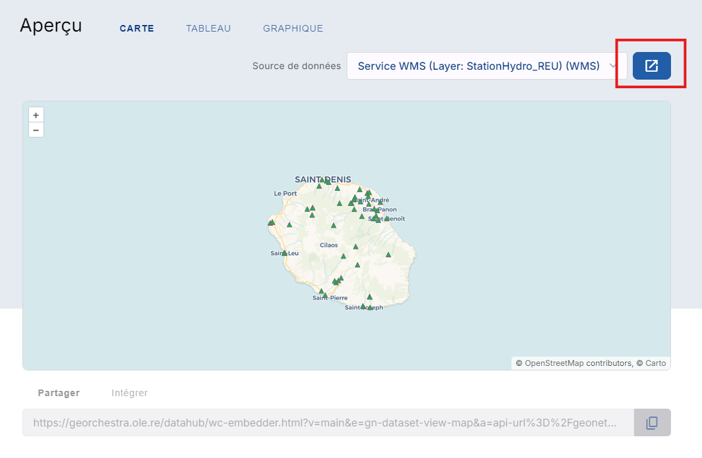

Catalogue
Introduction
Les données de ce catalogue proviennent de différents catalogue nationaux mais peuvent aussi être propre à l’Office de l’eau Réunion. Chaque donnée est reliée à une organisation et possèdent une description détaillée.
La recherche des données dans le catalogue
Il y a 3 onglets dans ce catalogue :
ACCUEIL pour afficher les dernières données postées.

DONNEES pour afficher toutes les données.
{kind=link}
ORGANISATION pour afficher toutes les organisations qui possèdent des données.

Vous pouvez filtrer vos recherches en fonction :
de la date de publication
du type de données
du format
de l’organisation qui l’a publiée
des mots clés associés
ou encore du type de licence si elle est renseignée

Les fonctionnalités des fiches de données
Lorsque vous cliquez sur une donnée, la page de description de cette donnée s’affiche.
Description de la donnée
Le haut de la page est dédiée à la description de cette donnée. Il y’a :
un titre
une description
la dernière date de la mise à jour,
son point de contact
le catalogue dont elle provient
les mots clés associées
un pourcentage à titre indicatif de la qualité de cette donnée
et d’autre informations plus technique

Prévisualisation de la donnée
Une interface de prévisualisation est aussi accessible si vous descendez la page. Cette interface permet de :
prévisualiser la donnée

visualiser le tableau attributaire

faire différents graphiques en fonction des attributs
{kind=link}
Téléchargement de la donnée
Vous pouvez aussi télécharger la donnée sous différents formats :

Mais aussi avoir accées à d’autre liens et URL, ainsi qu’aux flux OGC disponibles :

Vous pouvez aussi visualiser la donnée dans une interface cartographique en cliquant ici et cela vous fera apparaître le visualiseur.
{kind=link}